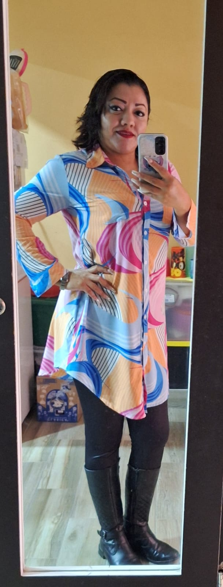
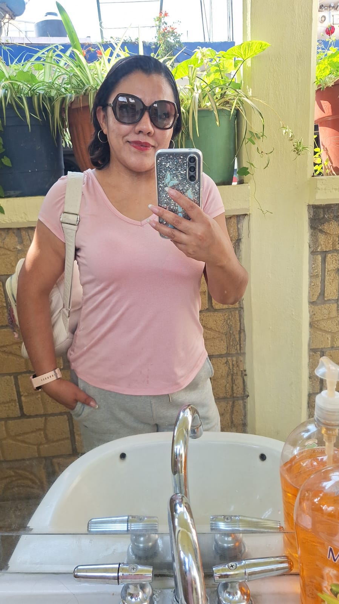

10. Registro visual
En esta sección se integran fotografías del paciente mes con mes para evaluar cambios físicos, reforzar la adherencia al protocolo nutricional y visualizar el progreso real.
| Periodo | Peso | Observación |
|---|---|---|
| Mes 1 | 78 kg | Inicio del protocolo |
| Mes 2 | 77.4 kg | Mejora digestiva y descenso progresivo |
Seguimiento clínico visual para reforzar la motivación del paciente.
Fotos del paciente
MES 1

MES 1

No cuentes los días, haz que los días cuenten.